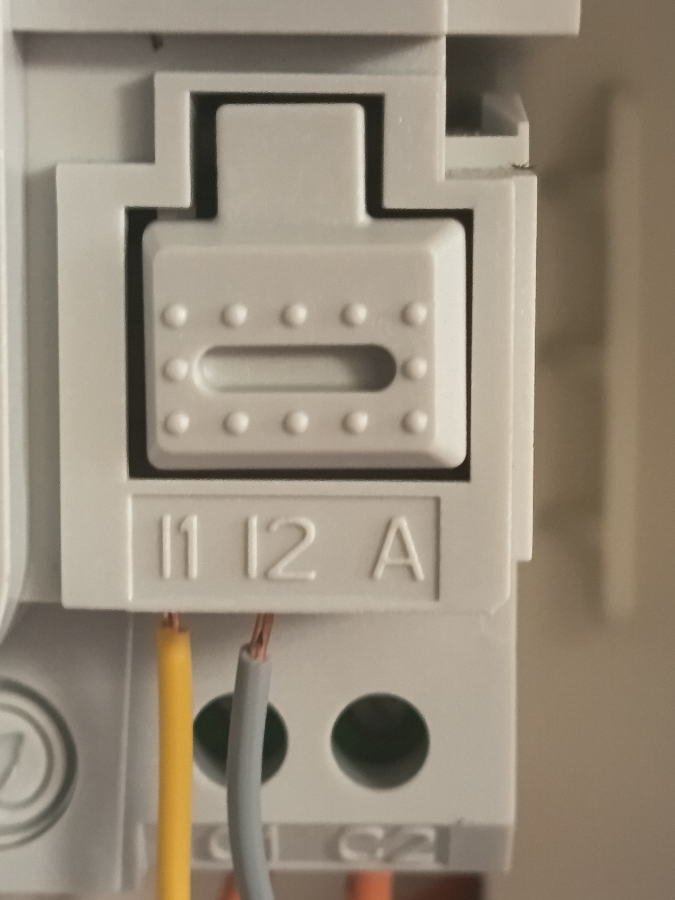

Aucun risque, promis. On se branche seulement sur la petite sortie téléinfo
du Linky : du courant faible, en très basse tension. Rien à voir avec le 230 V —
pas de courant fort, rien de dangereux. 👍
1 Branchez le boîtier
a. Retirez le capot vert du Linky (il se clipse, ça vient tout seul).
b. Branchez les 2 fils du boîtier sur les bornes téléinfo :
le fil jaune sur la borne I1
le fil gris sur la borne I2
Le geste : enfoncez simplement chaque fil dans sa borne
(jaune dans I1, gris dans I2) — il se
clipse et reste bien serré. Pas besoin d'appuyer sur le bouton pour brancher.
Le petit bouton à ressort juste au-dessus (commun aux deux bornes) sert surtout
à retirer un fil : on appuie dessus pour le libérer.
Vérif : tirez doucement sur chaque fil — il doit rester bien bloqué.

Jaune → I1 · Gris → I2. La borne A reste libre.
On ne touche qu'à I1 et I2. Laissez les autres bornes telles quelles — en
particulier C1 et C2 : c'est le « contact sec » du Linky, un
petit relais interne piloté par le compteur selon votre contrat (souvent utilisé pour commander un
contacteur de chauffe-eau en heures creuses). BEN ne s'en sert pas,
n'y touchez pas.
c. Branchez le boîtier sur le secteur (sa petite alim) et remettez le capot.
2 Téléchargez l'app
Scannez le QR code de votre téléphone (ou touchez le bouton) :
L'app trouve votre boîtier toute seule, vous demande votre Wi-Fi, puis vérifie
que tout est bon avec un petit code couleur qui clignote sur le boîtier.
Suivez l'écran — quelques tapotements et c'est fini. ✨
Une question, un souci ? Écrivez-nous — on est là pour vous aider.
Cette page : scannez pour la rouvrir sur votre téléphone.